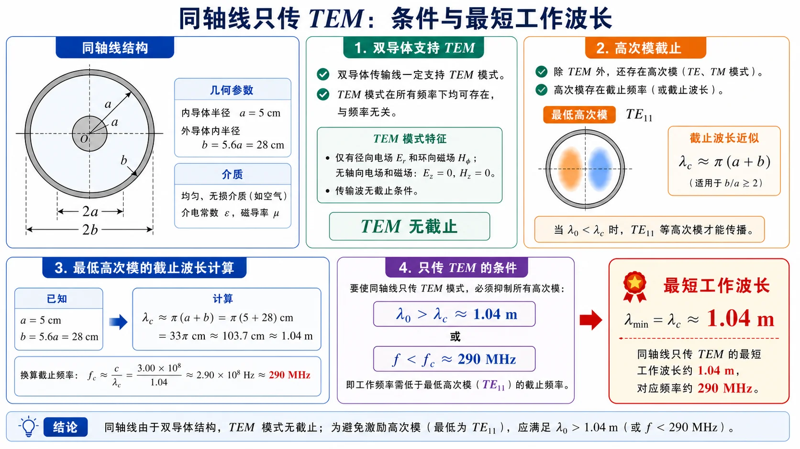

04 · 从矩形到圆与微带的对照§
本节先抓住一句话§
四类传输结构（矩形波导 / 圆波导 / 同轴线 / 微带线）共用一套语言：导体边界 → 模 → 截止 → 单模窗口。差别只在主模名字和 $f_{\mathrm c}$ 的几何依赖。

图：跨结构比较时，先看能否存在 TEM；若不存在，再按 TE/TM 模式、截止频率和单模窗口继续分析。
四结构横向对比§
| 维度 | 矩形波导 | 圆波导 | 同轴线 | 微带线 |
|---|---|---|---|---|
| 导体数 | 单 | 单 | 双 | 双（带 + 地） |
| 介质 | 单一均匀 | 单一均匀 | 单一均匀 | 半填充（空气+基片） |
| 主模 | $\mathrm{TE}_{10}$ | $\mathrm{TE}_{11}$ | TEM | 准 TEM |
| 主模有截止吗 | 有 | 有 | 没有 | 没有（理论） |
| 第二模 | $\mathrm{TE}_{20}$ 或 $\mathrm{TE}_{01}$ | $\mathrm{TM}_{01}$ | $\mathrm{TE}_{11}$ | 表面波 $\mathrm{TM}_0$ / $\mathrm{TE}_1$ |
| 单模上限决定者 | $\min(2a^{-1},b^{-1})c/2$ | $\chi_{01}/(2\pi R)$ | $\pi(a+b)$（波长） | 表面波或色散 |
| 色散 | 结构色散（$\beta=\sqrt{k^2-k_c^2}$） | 结构色散 | TEM 无色散 | 弱色散（高频显） |
| 损耗特性 | 主模随 $f$ 上升 | $\mathrm{TE}_{01}$ 高频降，其余上升 | 内导体小则损耗大 | 介质损耗 + 辐射损耗 |
| 工程主用途 | 高功率 / 高频段（雷达） | 圆极化 / 长距离 | 通用射频馈线 | PCB 平面电路 |
截止频率公式速查§
| 结构 | 主模截止 | 备注 |
|---|---|---|
| 矩形 $\mathrm{TE}_{10}$ | $f_{\mathrm c}=\dfrac{c}{2a}$ | 仅依赖宽边 $a$ |
| 圆 $\mathrm{TE}_{11}$ | $f_{\mathrm c}=\dfrac{c\chi'_{11}}{2\pi R}=\dfrac{1.841 c}{2\pi R}$ | $R$ 是半径 |
| 同轴 $\mathrm{TE}_{11}$（高阶起点） | $\lambda_{\mathrm c}\approx \pi(a+b)$ | TEM 没有截止 |
| 微带表面波 $\mathrm{TM}_0$ | 与 $\sqrt{\varepsilon_r-1}\,h$ 反相关 | 量级估计 |
介质填充时统一规则：把上面所有 $c$ 替换成 $c/\sqrt{\varepsilon_r}$，等价于把 $f_{\mathrm c}$ 除以 $\sqrt{\varepsilon_r}$，或把几何尺寸缩小 $\sqrt{\varepsilon_r}$ 倍以保持原 $f_{\mathrm c}$ 不变。
单模窗口宽度对比§
定义"单模带宽比" = (第二模截止 / 主模截止)：
| 结构 | 单模带宽比 | 解读 |
|---|---|---|
| 标准矩形（$a:b=2:1$） | $\mathrm{TE}_{20}$ vs $\mathrm{TE}_{10}$ = 2 | 1 倍带宽（$f$ 翻一倍后第二模出现） |
| 圆波导 | $\chi_{01}/\chi'_{11}=2.405/1.841\approx 1.31$ | 不到一倍带宽，单模窗口窄 |
| 同轴 | TEM 无下限，$\mathrm{TE}_{11}$ 上限 | 形式上"无限大"，实际由几何决定 |
| 微带 | 受表面波限制，$\sim$ 倍频量级 | 取决于基片厚度 |
直觉：圆波导单模窗口比矩形窄，所以工程上要用圆波导单模工作时，比矩形更挑剔。
工程取舍三问§
设计选哪种结构，先回答三个问题：
- 要不要可以处理大功率/高功率？ 矩形 > 圆 > 同轴 > 微带。
- 要不要紧凑/集成度？ 微带 > 同轴 > 圆 > 矩形。
- 要不要支持低频或低端 DC？ 同轴和微带（有 TEM/准 TEM，无低频截止）；矩形和圆波导都有低频截止。
四类结构没有"最好"，只有"在某频段、某尺寸约束、某功率等级下最合适"。

图：同轴线的核心约束是高阶模上限。把这个图像和矩形/圆波导的“主模截止—第二模截止”窗口对照，就能看出双导体 TEM 线与单导体波导的根本差别。
与前面阶段的衔接§
| 前面阶段语言 | 在本阶段如何沿用 |
|---|---|
| 长线 $\Gamma$、$\rho$、$Z_{\mathrm{in}}$ | 同轴 TEM 与微带准 TEM 都直接套；圆/矩形波导主模也可定义"等效特性阻抗"后套用 |
| Smith 圆图 | TEM/准 TEM 直接用；波导段先用 $\beta=2\pi/\lambda_g$ 算电长度再用 |
| 截止/色散 | 圆波导沿用矩形语言（贝塞尔代替三角函数）；同轴 TEM 没有色散；微带准 TEM 弱色散 |
| 模枚举 | 圆波导 $kR$ 与贝塞尔根比；同轴/微带通常只关心是否还在主模区 |
易错点§
- 把同轴线和圆波导混淆——同轴是双导体（有 TEM），圆波导是单导体（没有 TEM）。
- 把矩形 $\mathrm{TE}_{10}$ 的"宽边决定截止"硬套到圆波导——圆波导主模截止由半径 $R$ 和 $\chi'_{11}$ 决定。
- 把微带准 TEM 的 $\varepsilon_{\mathrm{eff}}$ 当成纯材料常数——它依赖几何 $W/h$。
- 算"介质填充的圆波导截止频率"时忘记同步缩放半径。
Mini 自检§
- 同轴线 TEM 模和矩形波导 $\mathrm{TE}_{10}$ 模在"是否有色散"上有什么本质不同？
- 圆波导单模带宽比矩形窄，工程上有什么影响？
- 给定 $f=10$ GHz、$\varepsilon_r=2.2$，比较：标准矩形 BJ-100、$R=1$ cm 圆波导、$Z_c=50\,\Omega$ 同轴这三种结构哪些可以单模工作？
- 如果只在 PCB 上做集成、频率 5 GHz、要求小尺寸，选哪种？
相关链接§
- 上一节：03 · 微带线准 TEM 与有效介电常数
- 下一节：自检清单与常见误区
- 矩形主模：Lec13–16 · 模谱主模与简并
- 跨结构作业题：第四次作业 · Lec17-18 第 6 题（圆波导损耗工程对照）
- 全课程主线：知识点目录